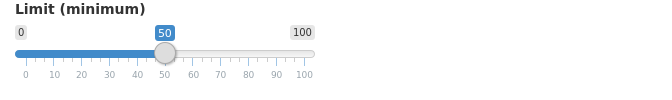

Chapter 3 Understanding UI
As you saw in the previous chapter, Shiny encourages separation of the code that generates your user interface (ui) from the code that drives your app’s behavior (server). In this chapter, we’ll dive much deeper into the UI side of things.
Outline
- Intro to Shiny UI
- Accessible for beginners,
extensibledelightful for experts - Built on htmltools, the same substrate used for HTML reports in R Markdown
- Accessible for beginners,
- Using inputs and outputs
- Using layout functions
- Writing custom HTML
- Building reusable UI functions
- Section ?? describes, at a high level, the goals and philosophy of UI construction in Shiny. (multiple levels of abstraction, never straying far from our HTML roots)
- Section ?? covers the basics of using inputs and outputs.
- Section ?? covers page and layout functions, which you can use to arrange inputs and outputs.
- Section ?? introduces the htmltools package
- Section 6.2 discusses the motivation behind reactive programming, and the mental shift that’s required to practice it successfully.
- Section 6.2 discusses the motivation behind reactive programming, and the mental shift that’s required to practice it successfully.
- Section 6.2 discusses the motivation behind reactive programming, and the mental shift that’s required to practice it successfully.
3.1 It’s just HTML
Fundamentally, Shiny UI is all about generating HTML. Almost all of the functions we’ll encounter below are merely thin wrappers around HTML generating functions from the htmltools package. These functions not only generate HTML elements, but also perform JavaScript/CSS dependency packaging, automatically escape text, and much more.
If you’re used to writing your own HTML, using R functions to generate HTML for you may not sound appealing at first. But if you give it a chance, you’ll find that this approach to HTML generation comes with many benefits, while retaining all the power and flexibility of manual coding. That said, if you really want to write your own angle brackets—or if you’re collaborating with a designer who wants to give you HTML—Shiny will let you do that too, as we’ll see at the end of this chapter (XREF).
To start, though, let’s focus on the basic UI elements that are most commonly used in Shiny apps.
3.2 Inputs
As we saw in the previous chapter, functions like sliderInput, selectInput, textInput, and numericInput are used to insert input controls into your UI.
The first parameter of an input function is always the input ID; this is a simple string that is composed of alphanumeric characters and/or underscore (no spaces, dashes, periods, or other special characters please!). Generally, there is a second parameter label that is used to create a human-readable label for the control. Any remaining parameters are specific to the particular input function, and can be used to customize the input control.
For example, a typical call to sliderInput might look something like this:
shiny::sliderInput("min", "Limit (minimum)", min = 0, max = 100, value = 50)
In the server function, the value of this slider would be accessed via input$min.
It’s absolutely vital that each input have a unique ID. Using the same ID value for more than one input or output in the same app will result in errors or incorrect results.
Shiny itself comes with a variety of input functions out of the box:
sliderInputselectInput/selectizeInputcheckboxGroupInput/checkboxInput/radioButtonsdateInput/dateRangeInputfileInputnumericInputtextInput/passwordInputactionButton
Each input function has its own unique look and functionality, and takes different arguments. But they all share the same two properties of 1) taking a unique input ID, and 2) exposing values to the server function via a slot in the input object.
3.3 Outputs
Output functions are used to tell Shiny where and how to place outputs that are defined in the app’s server.
Like inputs, outputs take a unique ID as their first argument. These IDs must be unique among all inputs and outputs!
Unlike inputs, outputs generally start out as empty rectangles, that need to be fed data from the server in order to actually appear.
3.4 Layouts and panels
Shiny includes several classes of UI functions that behave like neither inputs nor outputs. Rather, these functions help with the layout and formatting of your UI.
3.4.1 Page functions
The first function you’re likely to encounter in a Shiny UI is a page function. Page functions expect to be the outermost function call in your UI, and set up your web page to contain other content.
The most common page function is fluidPage.
fluidPage(..., title = NULL, theme = NULL)fluidPage sets up your page to use the Bootstrap CSS framework. Bootstrap provides your web page with attractive settings for typography and spacing, and also preloads dozens of CSS rules that can be invoked to visually organize and enhance specific areas of your UI. We’ll take advantage of quite a few of these Bootstrap rules as we proceed through this chapter.
The “fluid” in fluidPage means the page’s content may resize its width (but not height) as the size of the browser window changes. (The other option is “fixed”, which means the page contents will never exceed 960 pixels in width.)
- sidebar
- tabset
- bootstrap grid